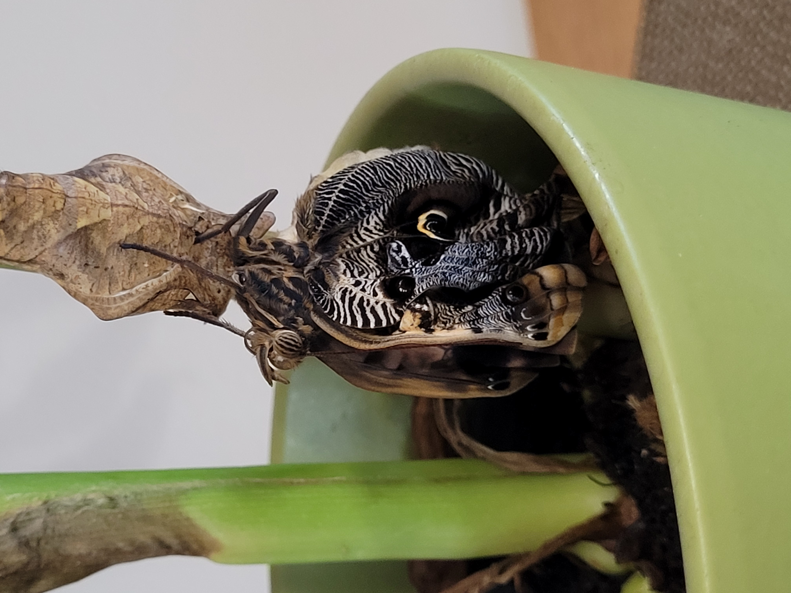
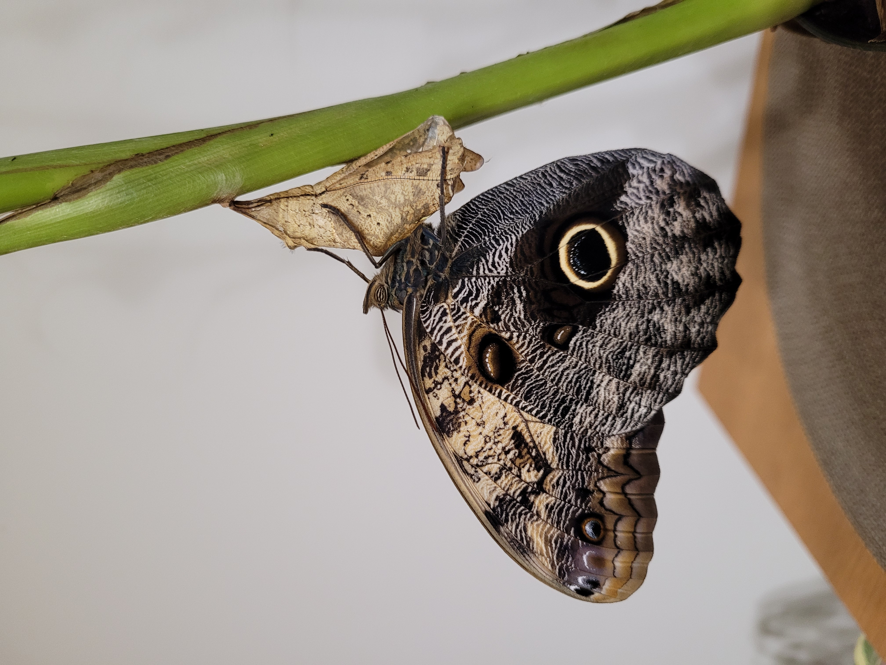

Po 3 tygodniach ze wszystkich poczwarek w odstępie kilku dni wykluły się motyle. Z początku ich odwłok był duży, w środku znajdowała się hemolimfa (odpowiednik krwi), a skrzydła były zwinięte. W ciągu około 30 minut skrzydła rozprostowały się i napompowały hemolimfą, a odwłok znacznie zmniejszył.


Motyle żywiły się sokiem z cytrusów i latały po domu. Dorosła postać (czyli imago) motyla Caligo Memnon ma skrzydła o rozpiętości około 15 cm, z zewnątrz brązowe z wzorkami i wyraźnym żółtym kółkiem, od środka beżowo-fioletowo-granatowe.